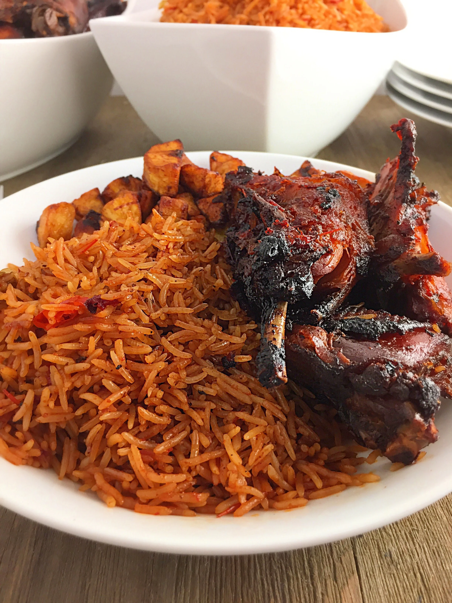

Fun fact about Jollof Rice!
Regional variations are a source of competition among the countries of West Africa, and in particular between Nigeria and Ghana, over whose version is the best; in the 2010s this developed into a friendly rivalry known as the "Jollof Wars".
-
List of ingredients
- 3 cups Basmati rice
- 1 cup blended roasted red bell pepper- tomato mix
- 1 medium green bell pepper (optional)
- 1 medium red bell pepper (optional)
- 2 medium onions
- 10 Tbsp Avacado Oil ( or any cooking oil of choice)
- 2 Chicken stock capsules
- 1 Tbsp minced garlic
- ½ tsp ground nutmeg
- 1 Tbsp ground ginger
- 1 tsp curry powder
- ½ Tbsp dry thyme
- 1 bay leaf
- 1 Tbsp bouillon powder
-
Pre-preparations and tips
-
Chop up ingredients:
- Chop up the bell peppers and onions.
-
Wash the rice:
- Wash and throughly drain the basmati rice.
-
Preheat the oven:
- Preheat oven to 375 degrees.
-
Wash the fruit & vegetables:
- Wash the peppers, onions and bay leaf.
-
Have tinfoil ready.
- You will need to put tinfoil over the pan so the moisture in the rice will be absorbed.
-
Have a spatula ready
- Have a spatula ready to fluff the rice.
-
Have a pan ready
- Have a pan with oil ready for cooking the rice.
-
-
Preparation
-
Flavour Preparation:
- Heat up oil in a sauce pan and sauté 1/2 of chopped onions and minced garlic till fragrant.
- Stir in the blended roasted pepper mix, add seasoning ( ground ginger, curry powder, dry thyme, ground nutmeg,bouillon powder and/ or salt). Allow cook on medium low heat for about 2 mins. stir continuously to prevent burning.
- Add the meat stock to the sauce, stir, taste for seasoning, adjust accordingly, then turn off heat.
-
-
Cooking
-
- Add the other half of the chopped onions and chopped red and green bell peppers (if using). Stick in the bay leaf.
- Cover the pan tightly with aluminum foil, place on the lower rack of the oven and cook for 40 mins or until all the moisture has been absorbed.
- Check for doneness. if rice is cooked, turn off the oven and leave rice covered in the oven for another 5 minutes.
- Bring out from oven and fluff out with your wooden spatula.
- Serve with Chicken, moi moi, plantains and salad.
-
-
Cultural Importance
Jollof is culturally important in much of West Africa to the point there is a common saying, "A party without Jollof is just a meeting". In Nigeria the term, "See Jollof" means "see how much fun is being had".
Served at weddings, birthdays, family gatherings, national holidays, and other significant events across West Africa, jollof rice transcends mere sustenance. In some cultures, this festive dish is used for friendly competitions over which cook can create the most flavorful and perfectly cooked pot.
Jollof Rice being served with chicken.